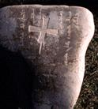

 |
Могильный камень с несторианским крестом близи г. Бишкека (столица Киргизии) с надписями на сирийском и тюрском языках (1255 г). |
"Поиски вымышленного царства"
Братскому монгольскому народу посвящается
 Предисловие
проф. Руденко С.
Предисловие
проф. Руденко С.  ТРИЛИСТНИК
ПИСЬМЕННОГО СТОЛА
ТРИЛИСТНИК
ПИСЬМЕННОГО СТОЛА 
- 1. Преодоление филологии
- 2. Выход в географию
- 3. Путь через историю
- ТРИЛИСТНИК
ПТИЧЬЕГО ПОЛЕТА
- 4.Темный век
(861≈960)
- 5. Разорванное безмолвие
(961≈1100)
- 6. Прообраз героя легенды
(1100≈1143)
- ТРИЛИСТНИК
КУРГАНА
- 7. Мужество и гибель "царя
Давида" (1143≈1218)
- Зеркальное отражение. Найманы и кераиты. Монголы XII в. Невзгоды. Исторический комментарий. Опыт анализа. Тэмуджин и Джамуха. Великий курултай. Слава и гибель. Возрожденная иллюзия.
- 8. Утрата мечты
(1218≈1259)
- Преимущества и недостатки "вида с кургана". Следствия и причины. Сила инерции. Борьба партий. Жестокая действительность. Когда сказка стала былью.
- 9. Расправа с победителями
(1259≈1312)
- ТРИЛИСТНИК
МЫШИНОЙ НОРЫ
- 10. Вкусы и симпатии автора
"Тайной истории"
- 11. Джамуха-сэчен под следствием
- 12. Двуединый
- ТРИЛИСТНИК
МЫСЛЕННА ДРЕВА
- 13. Опыт преодоления самообмана
- 14. Пространственно-временная
схема
- Разговор с филологом. Синхроническая таблица. Историческая этнография. Хронология как наука о времени. Хронологическая таблица.
- 15. Построение гипотез
- Несколько
слов к читателю
- Библиография
- Карты
- Ссылки на дополнительные
материалы
Подготовка электронного текста книги завершена в декабре 1998 года.